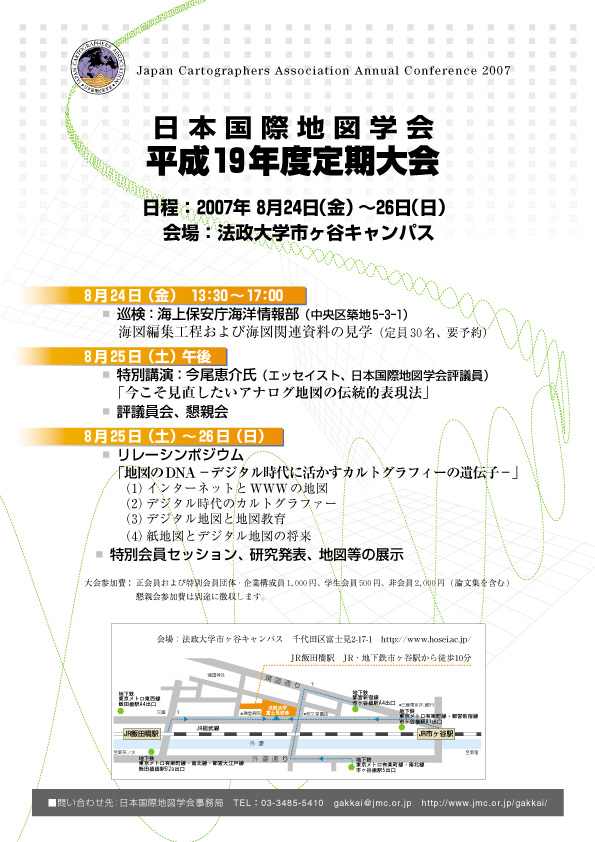

平成1９年度定期大会開催のおしらせ
|
来る平成１９（２００７）年８月２５日・２６日、平成１９年度定期大会を 下記の通り開催いたします。 みなさまのご参加をお待ちしております。 また、定期大会ポスターを作成いたしました。皆様の職場や学校等に 掲示していただくよう、お願いいたします。 ※巡検参加申込期限を、８月１０日（金）に変更いたします。ご希望の方は、お申し込み下さい。 |
|||||||||||||||||||||||||||||||||||||||||||||||||||||||||||||||||||||||||||||||||||||||||||||||||||||||||||||||||||||||||||||||||||||||||||||||||||||||||||||||||||
|
|
|||||||||||||||||||||||||||||||||||||||||||||||||||||||||||||||||||||||||||||||||||||||||||||||||||||||||||||||||||||||||||||||||||||||||||||||||||||||||||||||||||
| 平成１９年度定期大会開催のお知らせ（第3報） プログラムのｐｄｆ版(356kb)はこちらから | |||||||||||||||||||||||||||||||||||||||||||||||||||||||||||||||||||||||||||||||||||||||||||||||||||||||||||||||||||||||||||||||||||||||||||||||||||||||||||||||||||
| 日 時 ： 平成１９（２００７）年８月２４日（金）・２５日（土） ・ ２６日（日） | |||||||||||||||||||||||||||||||||||||||||||||||||||||||||||||||||||||||||||||||||||||||||||||||||||||||||||||||||||||||||||||||||||||||||||||||||||||||||||||||||||
| 場 所 ： 法政大学 市ヶ谷キャンパス ボアソナード・タワー （東京都千代田区富士見２-１７-１） | |||||||||||||||||||||||||||||||||||||||||||||||||||||||||||||||||||||||||||||||||||||||||||||||||||||||||||||||||||||||||||||||||||||||||||||||||||||||||||||||||||
| 大会参加費 ： | |||||||||||||||||||||||||||||||||||||||||||||||||||||||||||||||||||||||||||||||||||||||||||||||||||||||||||||||||||||||||||||||||||||||||||||||||||||||||||||||||||
|
普通会員・特別会員団体構成員 ： 1,000 円 学生会員 ： 500 円 非会員 ： 2,000 円（発表論文・資料集代を含む） 懇親会費 ： 4,000 円 ※ 地図・図書展示スペースのみの見学は無料 |
|||||||||||||||||||||||||||||||||||||||||||||||||||||||||||||||||||||||||||||||||||||||||||||||||||||||||||||||||||||||||||||||||||||||||||||||||||||||||||||||||||
| ８月２４日（金） 13：00〜17：00 | |||||||||||||||||||||||||||||||||||||||||||||||||||||||||||||||||||||||||||||||||||||||||||||||||||||||||||||||||||||||||||||||||||||||||||||||||||||||||||||||||||
| ・巡検：海上保安庁海洋情報部の海図作製現場の見学（中央区築地5-3-1） | |||||||||||||||||||||||||||||||||||||||||||||||||||||||||||||||||||||||||||||||||||||||||||||||||||||||||||||||||||||||||||||||||||||||||||||||||||||||||||||||||||
| 定員30名（申し込み先着順）。参加費500円。参加希望者は，８月１０日まで(←8月3日変更）に学会事務局へ電子メールか葉書でお申し込みください（詳細は巡検実施概要を参照）。 | |||||||||||||||||||||||||||||||||||||||||||||||||||||||||||||||||||||||||||||||||||||||||||||||||||||||||||||||||||||||||||||||||||||||||||||||||||||||||||||||||||
| ８月２５日（土） ９：３０〜１８：００ | |||||||||||||||||||||||||||||||||||||||||||||||||||||||||||||||||||||||||||||||||||||||||||||||||||||||||||||||||||||||||||||||||||||||||||||||||||||||||||||||||||
|
|||||||||||||||||||||||||||||||||||||||||||||||||||||||||||||||||||||||||||||||||||||||||||||||||||||||||||||||||||||||||||||||||||||||||||||||||||||||||||||||||||
|
|||||||||||||||||||||||||||||||||||||||||||||||||||||||||||||||||||||||||||||||||||||||||||||||||||||||||||||||||||||||||||||||||||||||||||||||||||||||||||||||||||
| ８月２６日（日） ９：３０〜１８：００ | |||||||||||||||||||||||||||||||||||||||||||||||||||||||||||||||||||||||||||||||||||||||||||||||||||||||||||||||||||||||||||||||||||||||||||||||||||||||||||||||||||
| リレーシンポジウム、研究発表、地図・図書展示 | |||||||||||||||||||||||||||||||||||||||||||||||||||||||||||||||||||||||||||||||||||||||||||||||||||||||||||||||||||||||||||||||||||||||||||||||||||||||||||||||||||
|
|||||||||||||||||||||||||||||||||||||||||||||||||||||||||||||||||||||||||||||||||||||||||||||||||||||||||||||||||||||||||||||||||||||||||||||||||||||||||||||||||||
| 【リレーシンポジウム】 地図のDNA−デジタル時代に活かすカルトグラフィーの遺伝子− | |
| いま地図の世界は、かつて経験しなかった変革の真っ只中にあります。地図を取り巻く環境は、地図作成技術としてのGIS の普及に加えて、地図コミュニケーションの形態も高速のインターネット網によって急速にその有り様を変えようとしています。さらに今後は、情報通信機器のモバイル化、ユビキタス化が生活の隅々までゆきわたり、デジタル地図利用が日常化することが予想されます。 今年度の定期大会では、古代から続く長い地図の歴史と伝統のもとで継承されてきた「地図のDNA」を、デジタル時代にどのように継承・発展させるのか、また新しい地図の時代に求められる地図学の役割とは何かについて考えるために、下記のテーマに関するリレーシンポジウムとパネルディスカッションを企画しました。前日の巡検と併せて多くの方のご参加をお待ちしております。 |
|
| (1) デジタル時代のカルトグラファー | |
| (2) ウェブマッピングサービスは万能か？ | |
| (3) 学校教育に見る「地図のDNA」−生まれつつある「GIS ディバイド」の危機− | |
| (4) パネルディスカッション：紙地図とデジタル地図の将来 | |
| 日本地球惑星科学連合2007 大会発表ポスターの展示 | |
| −「地球惑星科学における地図・空間表現」セッション− | |
| 日本地球惑星科学連合が毎年5 月に開催する「日本地球惑星科学連合大会」（略称：連合大会）では，地理学や地図学も含む地球惑星科学の各分野の多数の研究発表が行われています。日本国際地図学会は，連合大会で新たに「地球惑星科学おける地図・空間表現」というセッションを運営することにしました。第１回目となる今年度の連合大会では，同セッションで９件の研究発表がポスター形式で行われました。より多くの会員に連合大会の発表内容を知っていただけるよう，本定期大会で同じポスターを掲示することを企画しました。掲示されるのは，以下の発表のポスターです。 | |
| 熊木洋太 ： 地球惑星科学における地図・空間表現の意義 | |
| 大塚孝泰・門脇利広 ： 航空レーザ測量データを活用した空間表現事例 | |
| 千葉達郎・鈴木雄介・平松孝晋 ： 地形表現手法の諸問題と赤色立体地図 | |
| 世古口竜一・秋山幸秀・小林 浩・高貫潤一 ： 陰陽図の応用利用 | |
| 栗崎直子・三戸嘉之・向山 栄 ： 細密DEM の特徴を最大に生かすデジタル地形表現図カラー標高傾斜図ELSAMAP | |
| 佐藤 浩・八木浩司・小荒井衛・関口辰夫 ： 白神山地・泊の平地区における地形分類図の作成 | |
| 小荒井衛 ： 地図情報、地形分類、災害履歴を組み合わせた有効なハザード情報発信の検討 | |
| 石川 剛 ： GIS と地図表現を活用した全球気象状態の再現 | |
| 亀井啓一郎・原美登里・鈴木厚志 ： 地図作品展をとおした大学と地域社会との協働ネットワーク—「彩の国環境地図作品展」の実践— | |
|
|
|
| 地図・図書展 出展団体・企業 | |
| １．国土地理院 ２．海上保安庁海上情報部 ３．(財)日本デジタル道路地図協会 | |
| ４．(財)日本地図センター ５．(財)日本水路協会 ６．内外地図(株) | |
| ７．(株)昭文社 ８．シービーエス(株) ９．(株)古今書院 | |
| １０．(社)日本地図調製業協会 １１．(株)グローバルプランニング １２．(株)渡辺教具製作所 | |
| ※ 地図・図書展示スペースのみの見学は無料 | |
| 平成19年度定期大会のポスターが出来ました。皆様の職場や学校等に掲示していただくなど、ご自由にお使い下さい。 | |
| 
ポスター：PDF形式（552KB） |
|
|
|
|
| 平成19年度定期大会 巡検案内 | |
| １．テーマ「海上保安庁海洋情報部の海図作製現場の見学」 | |
| 「デジタル時代のカルトグラファーに求められる資質とは何か？」をコンピュータ支援システムによる海図作製現場を見聞し理解を深め議論したい。 | |
| ２．募集定員及び申し込み方法 | |
| ３０名（申し込み先着順） | |
| 住所、氏名、連絡先を明記の上、学会事務局に連絡のこと。 | |
| 締め切り8月10日（8月中旬までに詳細な資料を送付します。） | |
| 3．開催日時 | |
| ８月24日（金）13時集合、17時解散 | |
| ４．集合場所：海上保安庁海洋情報部玄関前（中央区築地5-3-1） | |
| ５．巡検内容（13時30分〜17時） | |
| コンピュータ支援システムによる海図作製工程及び海図改補・海図倉庫の見学、質疑応答・意見交換 | |
| ６．案内者 | |
| 上田秀敏会員（海洋情報部）、長井俊夫会員（日本水路協会） | |
| ７．参加費（資料等の実費）500円 | |
| ８．問い合わせ先 | |
| 集会委員会（大会巡検担当）：太田 弘（慶應義塾）mapota@z2.keio.jp | |
| 申し込み先： | |
| 〒153-8522 東京都目黒区青葉台4-9-6 （財）日本地図センター内 日本国際地図学会 事務局 |
|
|
|
|
| 平成１８年度定期大会 | |
| プログラム ＰＤＦ版（252kb）はこちらから | |
|
|
|